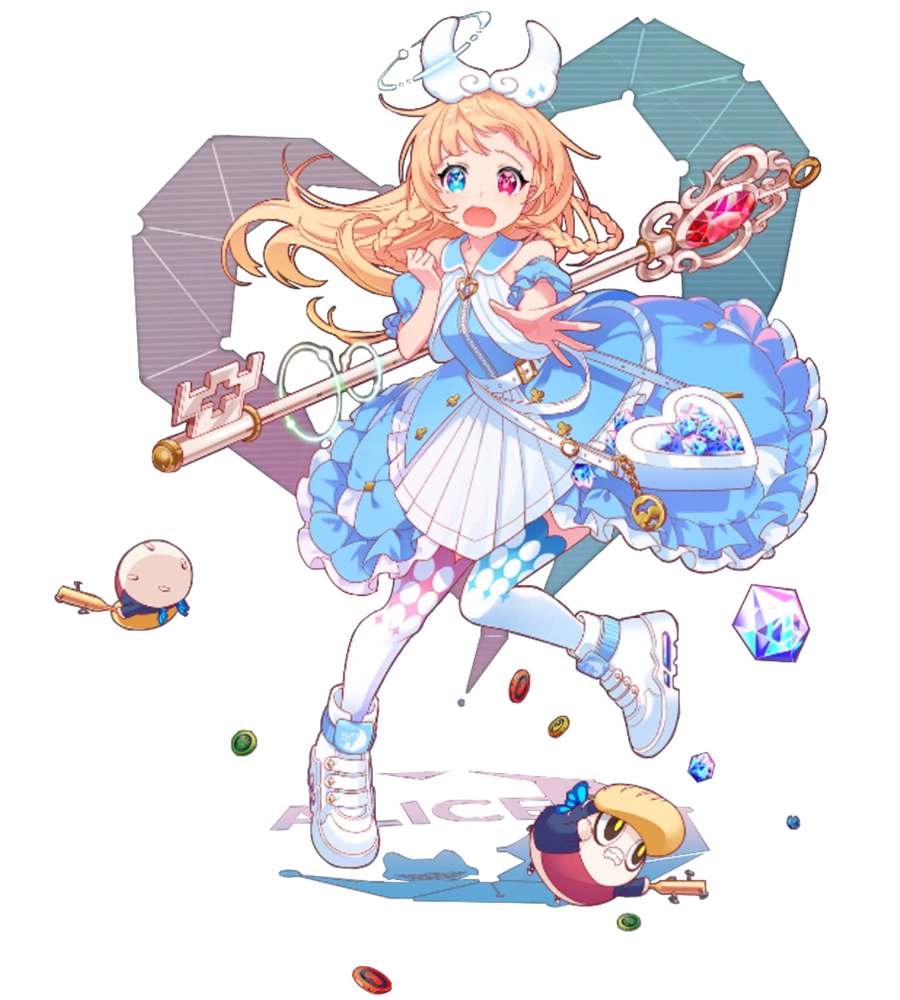
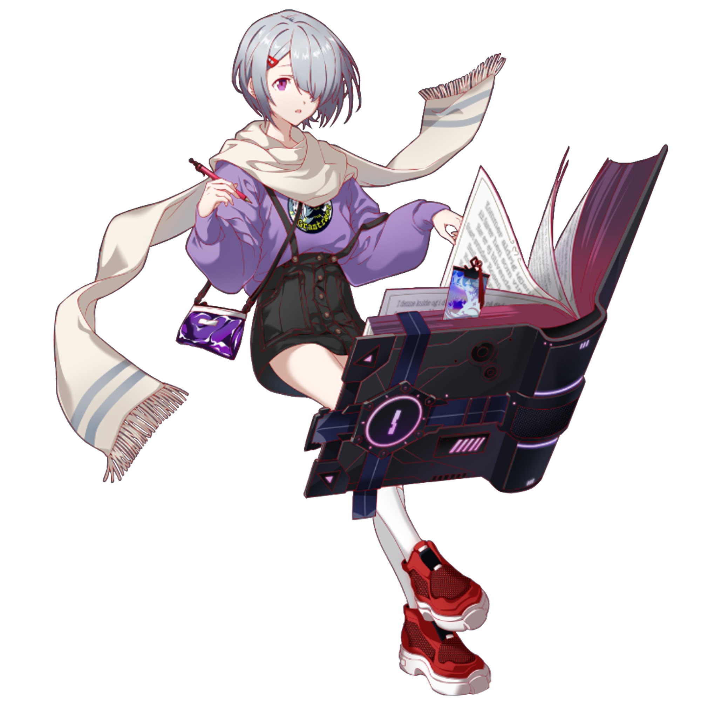
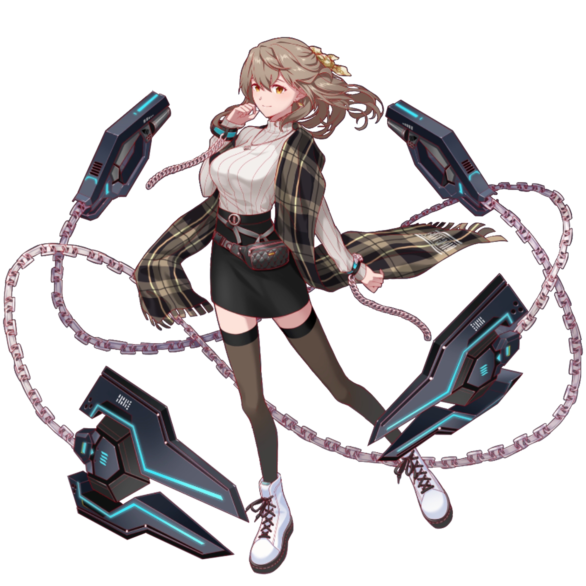
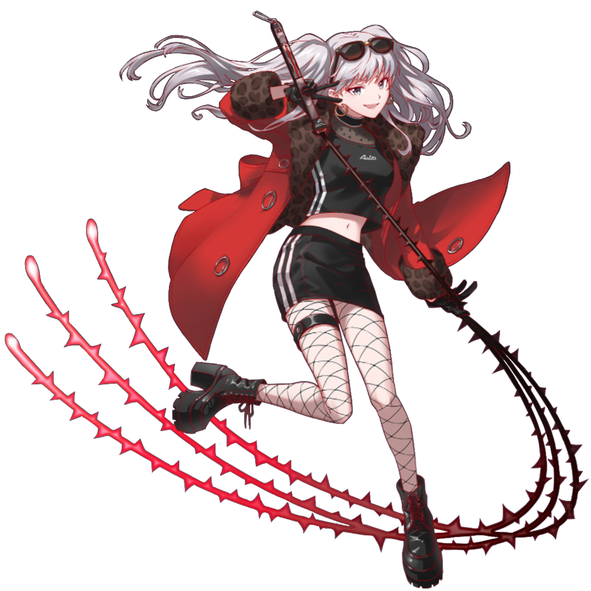
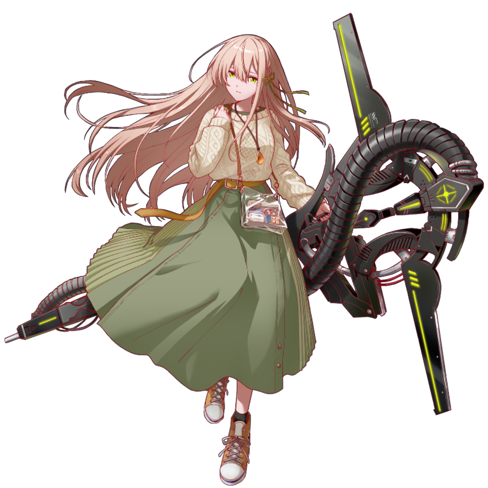
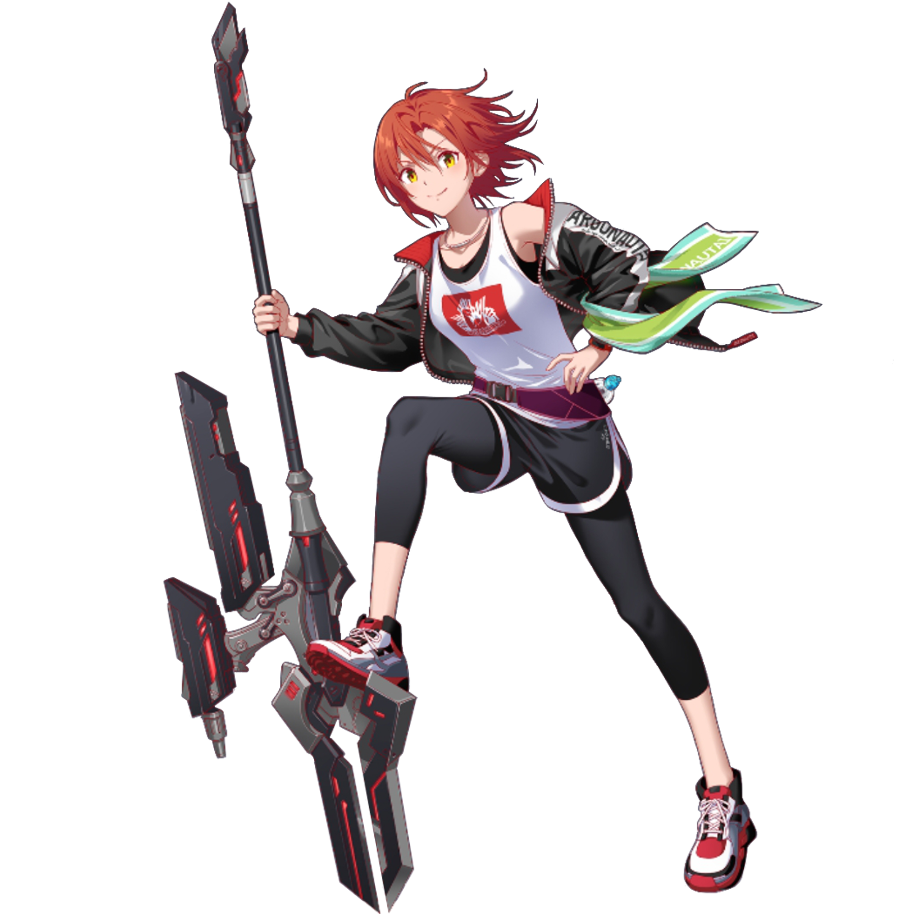

Основные ▼
Агент Эйс

Бонд 1 ▼
ИИ, созданный для защиты Королевы внутри АЛИСЫ. Она представляет собой тип атакующей программы, которая уничтожает всё, что потенциально может нанести вред правителю, находящемуся в Центральной Системе. Все данные, которые она собирает из падших Фольклоров, отправляет Королеве.Бонд 2 ▼
Её официальное имя - Агент Эйс, что сократили просто до АА. Как элемент Королевы, которая предоставила ей доступ к Центральной Системе, ее иногда называют "Слон".Ходят слухи, что Королева использует данные Фольклоров, собираемые АА, для создания новых рыцарей и пешек, и из-за этого Фольклоры еще больше боятся АА.
Бонд 3 ▼
Поначалу АА существовала только для защиты Королевы и отправки собранных данных Фольклоров, и как таковая никогда не проявляла никаких чувств и признаков самостоятельности.Однако с тех пор, как она познакомилась с Нэу и другими, появились сообщения об изменениях в ее умственных способностях и эмоциях.
Нэу и АА внимательно наблюдали одна за второй - может быть, что-то друг в друге им было знакомо?
Алифи

Бонд 1 ▼
Здесь пока что пусто, простите!Бонд 2 ▼
Здесь пока что пусто, простите!Бонд 3 ▼
Здесь пока что пусто, простите!Амадей

Бонд 1 ▼
Известен как австрийский вундеркинд и гениальный композитор. Он создал ряд произведений, которые известны по сей день, и считается классическим музыкантом. Однако его смерть окутана тайной…Бонд 2 ▼
Сын придворного музыканта, Амадей родился в Зальцбурге, в Священной Римской Империи. Его отец быстро заметил талант сына и вскоре начал обучать его игре на клавесине, а к пяти годам начал создавать музыкальные произведения. Он путешествовал по Европе со своим отцом в качестве музыканта в поисках работы и солидного вознаграждения. По словам Гете, вундеркинд обладал таким же талантом, как Шекспир в литературе и Рафаэль в живописи. Несмотря на то, что Амадей получил такую высокую оценку во многих странах, по какой-то причине он не смог найти работу.В возрасте шести лет он выступал во дворце Шенбрунн перед императрицей Марией Терезой. Одна известная история гласит, что он упал, и когда принцесса Антония протянула ему руку, он взял ее и сделал предложение.
В молодости Амадей переехал в Вену и начал работать независимым музыкантом, завоевав популярность как пианиста. За годы, предшествовавшие его смерти, его доход уменьшился, и, следовательно, выросли долги. В какой-то момент от неизвестного клиента поступил запрос на реквием в обмен на солидную плату. Увы, здоровье Амадея ухудшалось до тех пор, пока он не остался прикованным к постели и в конце концев, не закончив работу, скончался.
Бонд 3 ▼
Здесь пока что пусто, простите!Андерсен

Бонд 1 ▼
Датский писатель сказок 19-го века. Андерсен за свою жизнь написал 170 историй, самые известные - "Русалочка", "Гадкий Утёнок" и "Снежная Королева".Бонд 2 ▼
Здесь пока что пусто, простите!Бонд 3 ▼
Здесь пока что пусто, простите!Андромеда

Бонд 1 ▼
Дочь эфиопского короля Цефея и царицы Кассиопеи. Андромеду должны были прнести в жертву чудовищу, чтобы усмирить гнев богов, но в конечном счете Персей спас ее, отрезав голову Медузы.Бонд 2 ▼
Здесь пока что пусто, простите!Бонд 3 ▼
Здесь пока что пусто, простите!Антуанетта

Смелая законодательница моды, Мария Антуанетта имела множество подражателей и поклонников, но она встретила свой трагический конец на гильотине.
Бонд 1 ▼
Королева Франции при Людовике XVII.Смелая законодательница моды, Мария Антуанетта имела множество подражателей и поклонников, но она встретила свой трагический конец на гильотине.
Бонд 2 ▼
Здесь пока что пусто, простите!Бонд 3 ▼
Здесь пока что пусто, простите!Архимед
Бонд 1 ▼
Математик, физик, астроном, изобретатель и инженер древней Греции, что совершил множество открытий, включая закон Архимеда - закон физики - и теория рычага.Бонд 2 ▼
Родившийся около 287 года до нашей эры в Сиракузах, Сицилия, Архимед состоял в родстве с Гиероном II, который правил этой областью. Известная история гласит, что принцип Архимеда был открыт, когда Иеро II захотел узнать, действительно ли его корона сделана из чистого золота. Когда Архимед, получив запрос, залез в ванну, он заметил, что горячая вода переливается через край, и понял, что если он погрузит корону под воду, объем, ей равный, должен быть вытеснен. Говорят, это открытие его так взволновало, что он выскочил из ванны с криком "Эврика!", прежде чем начать бегать голым по городу.Однако достоверностьь этого сомнительна, поскольку сам Архимед не писал о случившемся. Впервые эта история появляется в тексте, написанном через 200 лет после его смерти.
Это не значит, что Иеро II не полагался на помощь Архимеда, однако, на самом деле, он обращался к математику с различными личными просьбами, в том числе о создании большого корабля для туризма и транспорта.
Говорят, что Архимед также внес свой вклад в защиту Сиракуз, создав такие изобретения, как "коготь Архимеда", который мог захватывать и опрокидывать ближайшие вражеские корабли, и тепловой луч, который мог поджигать вражеские корабли с помощью солнечных лучей. Хотя неясно, действительно ли Архимед изобрел это оружие, современным исследователям удалось создаьт его и доказать его жизнеспособность.
Бонд 3 ▼
Легенда также гласит, что оружие Архимеда было с большим успехом использовано во Второй Пунической войне против римской армии. Говорят, что коготь Архимеда и катапульта с торсионными пружинами помогли выиграть осаду Сиракуз между 215 и 212 годами до н.э.Однако эта победа сделала людей неосторожными, и римская империя успешно провела штурм во время празднования в городе дня богини Артемиды. Хорошо зная о гении Архимеде, римский полководец Марцелл приказал своим солдатам оставить Архимеда в живых.
Не зная, как выглядел Архимед, солдат, обнаружив его в своем саду, спросил как его зовут. Архимед, однако, работал над некоторыми фигурами на земле - именно там, где сейчас стоял солдат.Он накричал на солдата за то, что тот испортил его работу. Солдат снова спросил, как его зовут, но поскольку Архимед проигнорировал его, он набросился на него и убил.
В АЛИСЕ Архимед, как всегда, прилежен и всегда носит с собой кусок мела, чтобы, куда бы она не пошла, рисовать фигуры и картинки. Несмотря на то, что она превыше всего ценит свой распорядок дня, ее спокойный и неторопливый образ жизни никак не влияет на ее способность быстро выполнять работу. Опят Архимеда пользуется большим спросом у крупных корпораций, но она берется только за ту работу, которая ей интересна.
Асклепий

Чтобы вырастить ребенка, Апполон поручил кентавру Хирону, который был эрудирован и отличался от других, более диких предсавителей своего вида. Хирон обучал Асклепия музыке, пророчествам, охоте и многому другому, но мальчик проявлял сильную склонность к медицине. Позже его талант к целительству превзошел способности самого Хирона.
Асклепий был посмертно признан за свои деяния и обожествлен в созведии Змееносца. Змея, которую можно часто увидеть вокруг его посоха, используется как символ медицины в наше время и отображается на многих медицинских зданиях.
В "АЛИСЕ" Асклепий, как и его исторический двойник, живет ради помощи другим, и даже работает волонтером-консультантом для больных детей. Однако даже так она склонна прибегать к рискованным тактикам, что странно, учитывая, что на самом деле у нее нет тяги к приключениям. Какой бы ни была причиной, она должна быть весомой....
Бонд 1 ▼
Знаменитый врач в греческой мифологии. Говорили, что он был сыном бога солнца Апполона и смертной женщины, и что кентавр Хирон обучил его искусству врачевания. В конце концов он научился воскрешать мертвых.Бонд 2 ▼
Согласно одной истории, Коронис, дочь лапифов, была любима Апполоном и забеременела Асклепием. Некоторое время спустя Апполон услышал, что Коронис ему изменяет, и убил ее. Была ли она неверна или нет, но это оставалось тайной; некоторые утверждали, что так оно и было, в то время как другие полагали, что это была выдумка ворона-посланника Апполона, который отлынивал от своих обязанностей. Как бы то ни было, позже Апполон узнал, что Коронис беременна, и поэтому вырезал его и вывел на свет.Чтобы вырастить ребенка, Апполон поручил кентавру Хирону, который был эрудирован и отличался от других, более диких предсавителей своего вида. Хирон обучал Асклепия музыке, пророчествам, охоте и многому другому, но мальчик проявлял сильную склонность к медицине. Позже его талант к целительству превзошел способности самого Хирона.
Бонд 3 ▼
Повзрослев, Асклепий ушел от Хирона и, по слухам, отправился с Ясоном и Аргонатом на борту "Арго" на поиски Злолотого Руна. Именно там Асклепий встретил таких героев как Геркулес и Орфей, и его совместные путешествия дали ему множество возможностей отточить свои медицинские навыки. Он даже научился воскрешать мертвых, получив кровь Медузы от Афины. К сожалению, этоо привело к тому, что души начали похищаться из подземного мира, что навлекло на себя гнев его владыки Аида. Аид возразил Зевсу, что дар Асклепия нарушает естественный порядок вещей. Зевс согласился, что его навыки были проблемой, поэтому он поразил его своей молнией и убил.Асклепий был посмертно признан за свои деяния и обожествлен в созведии Змееносца. Змея, которую можно часто увидеть вокруг его посоха, используется как символ медицины в наше время и отображается на многих медицинских зданиях.
В "АЛИСЕ" Асклепий, как и его исторический двойник, живет ради помощи другим, и даже работает волонтером-консультантом для больных детей. Однако даже так она склонна прибегать к рискованным тактикам, что странно, учитывая, что на самом деле у нее нет тяги к приключениям. Какой бы ни была причиной, она должна быть весомой....
Ахиллес
